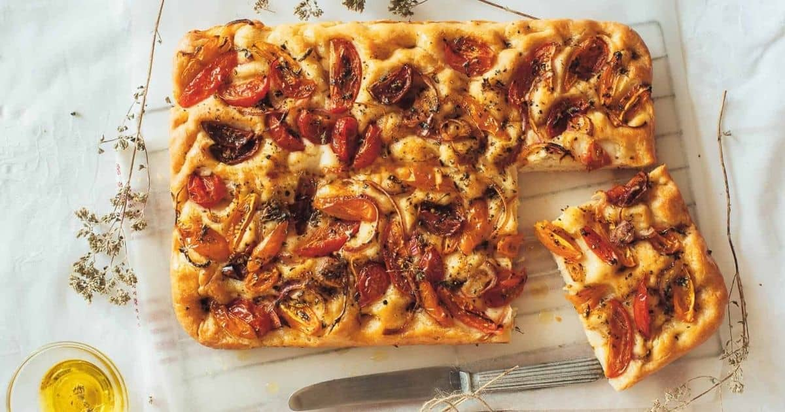

Ladenia is a type of soft flatbread that’s topped with tomato slices, onions, and a generous drizzle of Greek olive oil. Hailing from Kimolos, this savory delicacy is considered to be the Greek take on Italian pizza, and it is believed to date back to the time of the Venetian occupation of the island. The dough is typically made with flour, yeast, water, and salt, although some versions also call for the addition of olive oil to the combination.
Meal prep time : 2 hours 10 minutes
Servings : 10